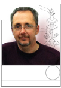

Paul Nordine
The President of PPM has published more than 100 scientific papers primarily in the area of high temperature materials research. In 1987 he moved from prior work at University and national laboratories to work with, and own, private small business companies that focus on R&D to develop and apply non-contact instruments. He founded Containerless Research, Inc. (CRI) in 1993, and in 2008 formed PPM to continue CRI's work in non-contact instruments for use in experimental materials science research. Dr. Nordine has a B.S. in Chemistry from Michigan State University, and a PhD in Physical Chemistry from University of Kansas. He has worked at Los Alamos National Laboratory, National Bureau of Standards, Lawrence Livermore National Laboratory, Yale University, and Midwest Research Institute. His companies have developed instruments sold to research laboratories in the U.S., England, Germany, Austria, and Japan.Jeff Sickel
Founded Corpus Callosum Corporation, a multi-faceted software-solutions company created in 1999. Jeff's liberal-arts background and over two decades of experience with professional software development and systems integration has enabled him to generate highly customized products for clients across a variety of industries. He has provided software solutions for aeronautical, financial, internet startup, and pharmaceutical companies as well as city governments and ecological research groups. Jeff provided custom firmware, instrumentation, and complete system-integration services to PPM.Dennis Merkley
As an Electronics Engineer and Project Manager for Intersonics, Inc. in Northbrook, IL from 1978 to 1994, Dennis was part of an innovative group that pioneered many technical advancements in the field of Containerless Processing. Dennis is an expert in Acoustic Levitation, and is a co-inventor of the patented Aero-Acoustic Levitator. Since leaving the Chicago area in 1994, Dennis has been involved in business development, process development, and re-engineering activities for multiple businesses in southern Indiana. In 2009, he rejoined the PPM team as a Technical Consultant and Project Manager to support the development of an Aero-Acoustic Levitator for RWTH Technical Institute in Aachen, Germany.